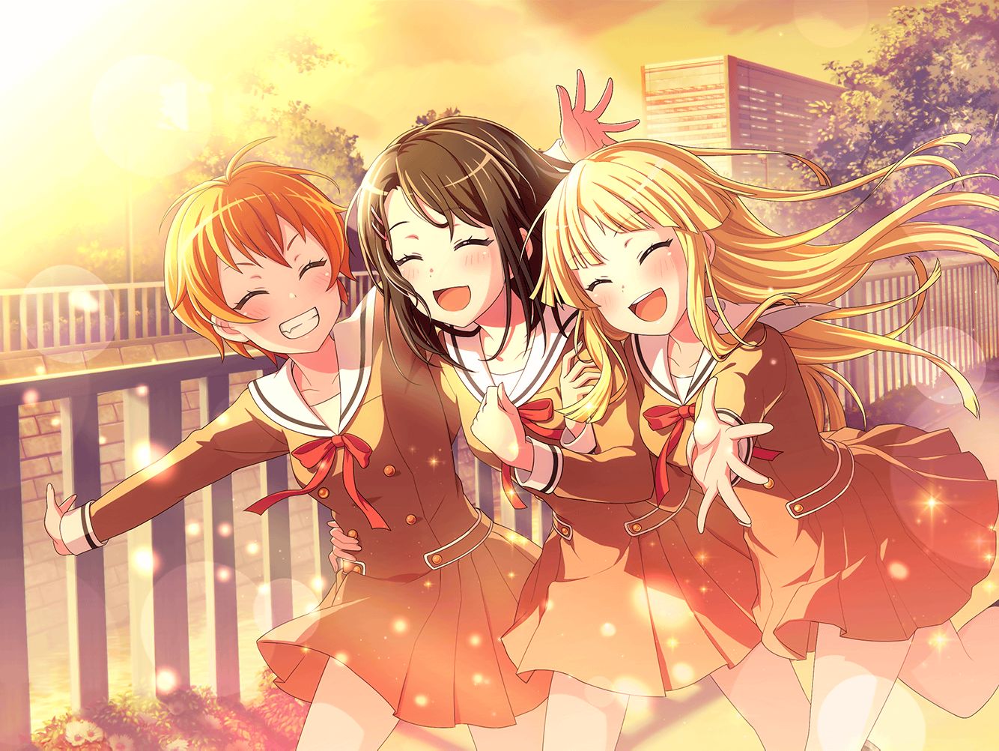

帰り道
花音
美咲ちゃんがやろうって言ったライブ、
いつも以上に成功して良かったね
美咲
ですね。一時は会場はないわ、さらには新曲作ることになるわで
先が思いやられましたよ
花音
あはは……
花音
あっ、こころちゃん達、
ずいぶん先に行っちゃったね
はぐみ
こころん、薫くん！ 楽しいこと思いついちゃった！
あの電柱に一番最初にタッチした人が勝ちっていうルールだよ！
こころ
いいわね、はぐみ！
ライブの練習後なのに楽しいことを見つけるなんて天才ね！
あたし、ワクワクしすぎて足が自然と動き出してるわ
薫
フフ、それはフライングと言うんじゃないのかい、こころ。
まったく困った子猫ちゃんだ
はぐみ
あ、こころんズル～い！
はぐみだって……それ～！
花音
今日は、練習長めにやったのに、
まだあんなに体力残ってるんだね……
美咲
バカはバカでも、
体力バカにも含まれてるのかもしれないですね、
あの３バカ
花音
あはは～。どうする、美咲ちゃん？
美咲
そうですね。
走るのは嫌なのでゆっくり追いかけましょう
こころ
…………はぁっ、はぁ……っ……タッチ～！
あたしが一番ね！
はぐみ
にばーん！ ……こころんに勝てなかった～。くやし～！
薫
はぁ、はぁっ……
ふふっ、私が三着というわけかい？
それはそれで、儚い……
花音
みんな……待って～
はぐみ
みーくんもかのちゃん先輩も遅いよ！
美咲
はぐみ達が速いんだよ。
あたしも花音さんもこれでも急いで来たんだよ
はぐみ
あ、今思い出したんだけどね！ さっき話してたライブ！
はぐみのクラスの人もすごく良かったって言ってくれたよ！
美咲
話、全然聞いてないし……
薫
そうだね。
この前のライブは今までの中で一番と言って良いほど、
素晴らしいものだった
こころ
なにより観に来てくれた人達がみんな笑顔になっていたわ！
美咲
（まあ、色々と誤解も解けたし良かったかな……）
花音
美咲ちゃん、うれしそうだね
美咲
別にうれしいとかじゃ……！
いや、花音さんだったらいいかな
美咲
こころやハロハピに対してヘンっていう誤解をされてて、
それをなんとかしたくて、ライブしましたけど
美咲
別にあたしが解く必要もないじゃんって気もしますよね
美咲
こころ達はなんていうか純粋というか、
そういうの気にしないタイプじゃないですか
美咲
そう思ったら、
あたしがなんとかするしかないなって思ったんです。
……こんなこと思うなんて、意外って言われそうですけど
花音
ううん、そんなことないよ。
最初は、こころちゃんやハロハピに何かするっていうのは、
あんまりなかったけど……今は違うよね
美咲
最初はヘンな集団に巻き込まれたって思ってましたから
花音
そうだね。一緒に抜けようって言ってたもんね
美咲
はは、懐かしいです
花音
今は違うって、美咲ちゃんも思ってるの？
美咲
そうですね。少なくとも今は……
これでも、あたしはハロハピの一員なのかなと
思ったりしてます
花音
私にとって、美咲ちゃんは最初からハロハピのメンバーだったよ
美咲
そうですか？
自分では、最近ようやくハロハピの一員なんだって、
思い始めたばっかりですよ
花音
そう思ってくれてるのは、私もうれしい。
でも、まだあの三人にはミッシェルが
美咲ちゃんって分かってないよね
こころ
ミッシェル？
ミッシェルがいたの、花音？
花音
ううん、違うよこころちゃん。ミッシェルの話をしてたの
こころ
そう。ミッシェルは一体今どこにいるのかしら。
前のライブが終わってから、一度も見てないわ
はぐみ
そうだね、ミッシェルいつもすぐいなくなっちゃって……
あ、もしかして魔法の国に住んでるとか！
薫
魔法の国……そうか、ミッシェルは本当はお嬢様で、
けれど、魔女の呪いであの姿に変えられてしまったに違いない……
なんてことだ……とても、儚い、運命だ……
美咲
いやいや、魔法で着ぐるみの姿にはさすがにならないでしょ
はぐみ
そんなことより、
この前のミッシェル、すごくかっこよかったよね！
こころ
そうね！ いつも以上に勢いを感じたわ！
薫
とても素晴らしいパフォーマンスだった。
それを本人に伝えられないなんて……儚すぎる……
花音
み、みんな……えっと！
美咲
……いいんですよ、花音さん
花音
え、でも……そろそろ美咲ちゃんがミッシェルだって、
もう一回ちゃんと説明した方が良いんじゃないかな？
美咲
花音さん、気にしなくていいですよ
花音
……美咲ちゃんはホントにそれでいいの？
美咲
はい。確かにちゃんと伝えたいって気持ちはありますけど……
美咲
けど、あたしは今のこの立場も嫌いじゃないみたいです
花音
……そっか。でも、いつか三人が分かってくれる日がくるといいね
美咲
そうですね。
そのいつかがいつになるかは分からないですけど……
なんせ、３バカですから。あはは……